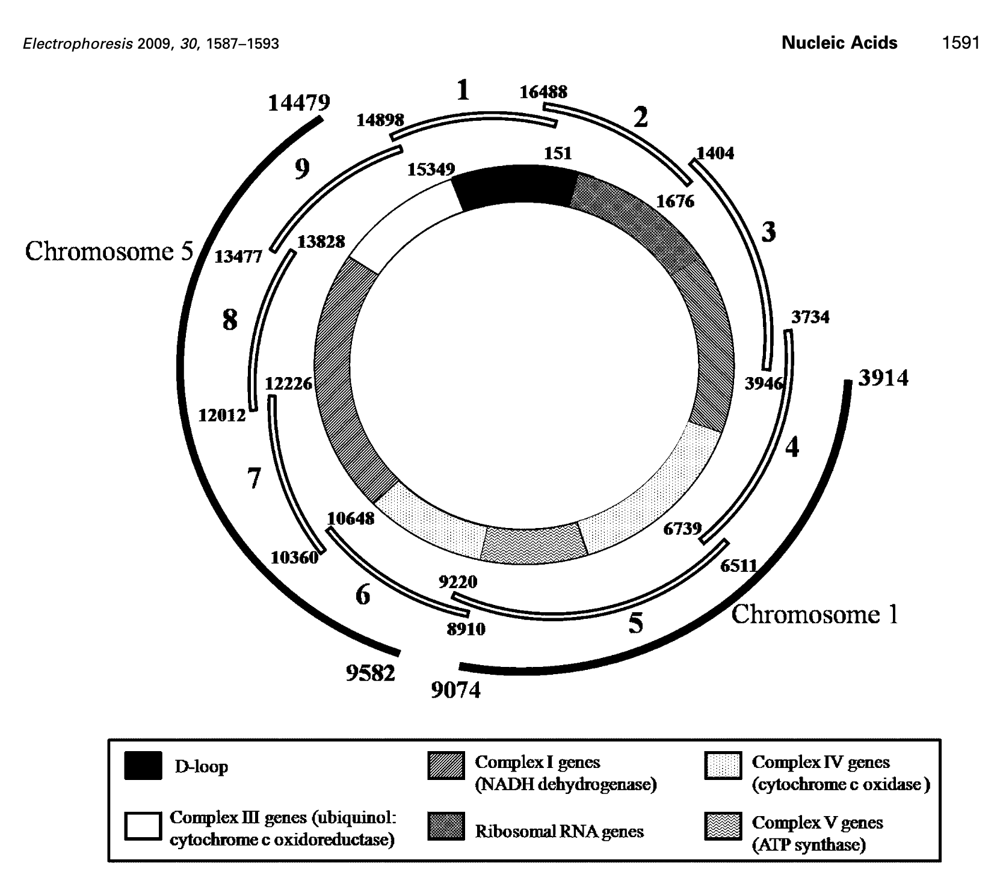

Mitochondiral DNA analysis
Sequencing of the mitochondrial d-loop/control region
In this protocol we will amplify the d-loop/control region of your mitochondrial DNA using polymerase chain reaction (PCR).
Materials
- Saline solution (0.9% NaCl), 10 ml
- 10% Chelex®, 100 µl
- 15 ml test tube, polypropylene
- Paper cup
- 1.5 ml test tubes, polypropylene
- 1 ml transfer pipet or
- 100-1,000 µl micropipet and tip
- Microcentrifuge
- Thermal cycler
Steps
Saline rinse and Chelex DNA extraction
- Pour 10 ml of the saline solution (0.9% NaCl) into mouth and vigorously swish for 1 minute.
- Expel saline solution into a paper cup.
- Swirl to mix cells in the cup and transfer 1 ml (1000 µl) of the liquid to 1.5 ml tube.
- Place your sample tube, together with other student samples, in a balanced configuration in a microcentrifuge, and spin for 1.5 minute.
- Carefully pour off supernatant into paper cup or sink. Be careful not to disturb the cell pellet at the bottom of the test tube. A small amount of saline will remain in the tube.
- Resuspend cells in remaining saline by pipetting in and out. (If needed, 30 µl of saline solution may be added to facilitate resuspension.)
- Withdraw 30 µl of cell suspension, and add to tube containing 100 µl of Chelex. Vortex to mix.
- Boil cell sample for 10 minutes. Use boiling water bath, heat block, or program thermal cycler for 10 minutes at 99°C. Then, cool tube briefly on i ice (optional).
- After boiling, vortex tube. Place in a balanced configuration in a microcentrifuge, and spin for 30 sec.
- Transfer 30 µl of supernatant (containing the DNA) to clean 1.5 ml tube. Avoid cell debris and Chelex beads. This sample will be used for setting up one or more PCR reactions.
- Store your sample on ice or in the freezer until ready to begin Part II.
D-loop/control region PCR amplification
- Use fresh tip to add 2.5 µl of human DNA (from Part I) to reaction tube, and tap to mix. Pool reagents by pulsing in a microcentrifuge or by sharply tapping tube bottom on lab bench.
- Label the cap of your tube with a number, as assigned by your teacher. In this way, your results will be anonymous.
- Store all samples on ice until ready to amplify according to the following profile. Program thermal cycler for 30 cycles according to the following cycle profiles. Each program may be linked to a 4°C to hold samples after completing the cycle profile, but amplified DNAs also hold well at room temperature.
PCR Protocol
- Denaturing time and temperature 30 sec - 94°C
- Annealing time and temperature 30 sec - 58°C
- Extending time and temperature 30 sec - 72°C
- Hold at -4°C (optional)
Whole mitochondrial PCR amplification
- Note: See original paper: link

- Add 2 µl of human DNA to a labeled reaction tube (primer sets 1-9)
- Mix gently and spin before placing in PCR machine
NEB LongAmp™ Taq 2X Master Mix
| Reagent | Amount |
|---|---|
| 10 µM Forward Primer | 1 µl |
| 10 µM Reverse Primer | 1 µl |
| Template DNA | 2 µl |
| LongAmp Taq 2X Master Mix | 12.5 µl |
| Nuclease-free water | 8.5 µl |
PCR Protocol
- Initial denaturing time and temperature 30 sec - 94°C
- Denaturing time and temperature 30 sec - 94°C
- Annealing time and temperature 60 second - Primer specific temp
- Extending time and temperature 160 sec (~50 sec per KB) - 65°C
- Final extension time 10 min - 65°C
- Hold at -4°C (optional)
Primer sets
| Primer Pair | Product size | Anneal temp |
|---|---|---|
| 3-1404-F | 2543 | 57 |
| 3-3947-R | 57 | |
| 5-6511-F | 2709 | 58 |
| 5-9220-R | 58 | |
| 1-14898-F | 1822 | 60 |
| 1-151-R | 60 | |
| 2-16488-F | 1758 | 60 |
| 2-1677-R | 60 | |
| 4-3734-F | 3005 | 61 |
| 4-6739-R | 61 | |
| 6-8910-F | 1738 | 61 |
| 6-10648-R | 61 | |
| 7-10360-F | 1866 | 61 |
| 7-12226-R | 61 | |
| 8-11977-F | 1853 | 63 |
| 8-13830-R | 63 | |
| 9-13477-F | 1872 | 63 |
| 9-15349-R | 63 |